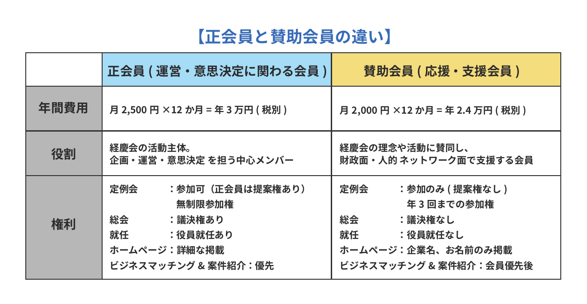

Application Form
下記項目をご入力の上、入力内容確認へ進んでください。
一般社団法人 経慶会 入会申込書（理事会審査シート付）
私は、一般社団法人経慶会の理念および目的に賛同し、会員として入会を希望いたします。 入会が承認された場合は、定款・規約および各種規程を遵守し、会員として誠実に活動することを誓約いたします。
氏名※必須
フリガナ※必須
生年月日※必須
--201020092008200720062005200420032002200120001999199819971996199519941993199219911990198919881987198619851984198319821981198019791978197719761975197419731972197119701969196819671966196519641963196219611960195919581957195619551954195319521951195019491948194719461945194419431942194119401939193819371936193519341933193219311930年--123456789101112月--12345678910111213141516171819202122232425262728293031日
住所※必須
電話番号※必須
メールアドレス※必須
会社名※必須
役職※必須
会社所在地
設立年
従業員数※必須
—以下から選択してください—10人以下11〜50人50〜100人100人以上
年商※必須
—以下から選択してください—1億以下1〜5億5〜10億10億以上
事業内容
会社HP
あてはまるものをすべてお選びください。
参加目的※必須
経営者ネットワーク構築経営知識向上地域社会貢献ビジネス連携その他
その他の内容
紹介者氏名※必須
下のボタンから正会員と賛助会員の違いをご確認のうえ、ご希望の会員種別をお選びください。
ご希望の会員種別※必須
正会員賛助会員
私は以下について表明・保証いたします。

内容をご確認のうえ、下の「ご希望の会員種別」をお選びください。